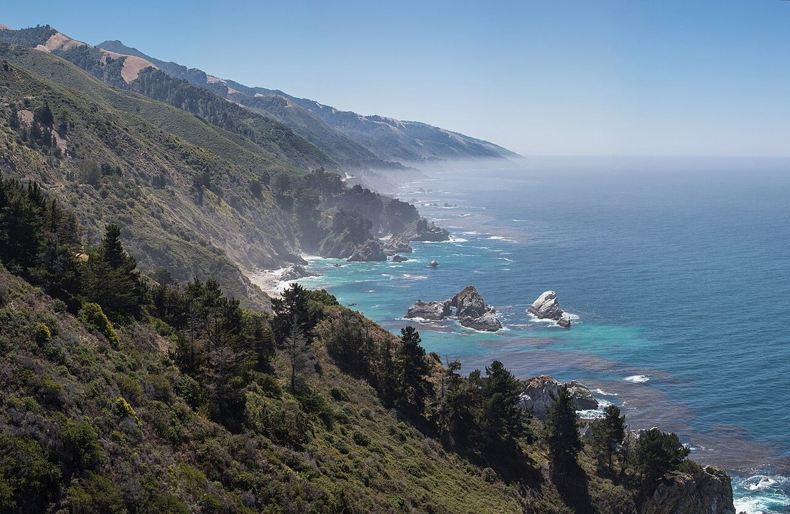
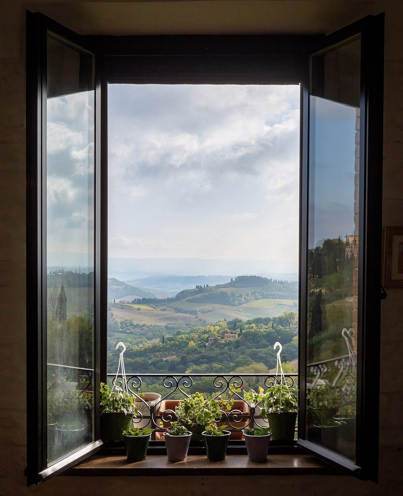

カフェ / 大阪府高槻市
NCAFE
エヌカフェ(読み方は未確認のため、便宜上のカナ表記です)
〒569-1121 大阪府高槻市真上町1丁目15-22 にあるカフェ「NCAFE」のご案内ページです。営業時間やメニューなど、詳しいことは準備中。まずはInstagramをのぞいてみてください。
電文(39字)
エヌカフェ ノ アンナイ デス マル ショウサイ ハ ジュンビチュウ マル マズ ハ インスタ ヘ マル

制作側の連想
1マスに1文字、カタカナで届ける
店名の由来や読み方は分かりません。制作側はアルファベットだけの屋号を見て、頼信紙(昔の電報の用紙)のマス目に、1文字ずつカタカナで書き込む様子を連想しました。そこでこのサイトは、電文のマス目と、貼り付けた写真で作っています。これは制作側の連想で、お店の理念・由来とは無関係です。
添付写真(イメージ)
遠くから届いた3枚
写真は高槻市やお店の様子ではありません。国外のフリー素材を、雰囲気のイメージとして添えています。



ご案内
お店のこと(確認できたものだけ)
| 所在地 | 〒569-1121 大阪府高槻市真上町1丁目15-22 |
|---|---|
| 電話 | なし |
| 営業時間 | 準備中 |
| 定休日 | 準備中 |
| ご予約 | 準備中 |
| 駐車場 | 準備中 |
| SNS | Instagram @n_cafe_8 |